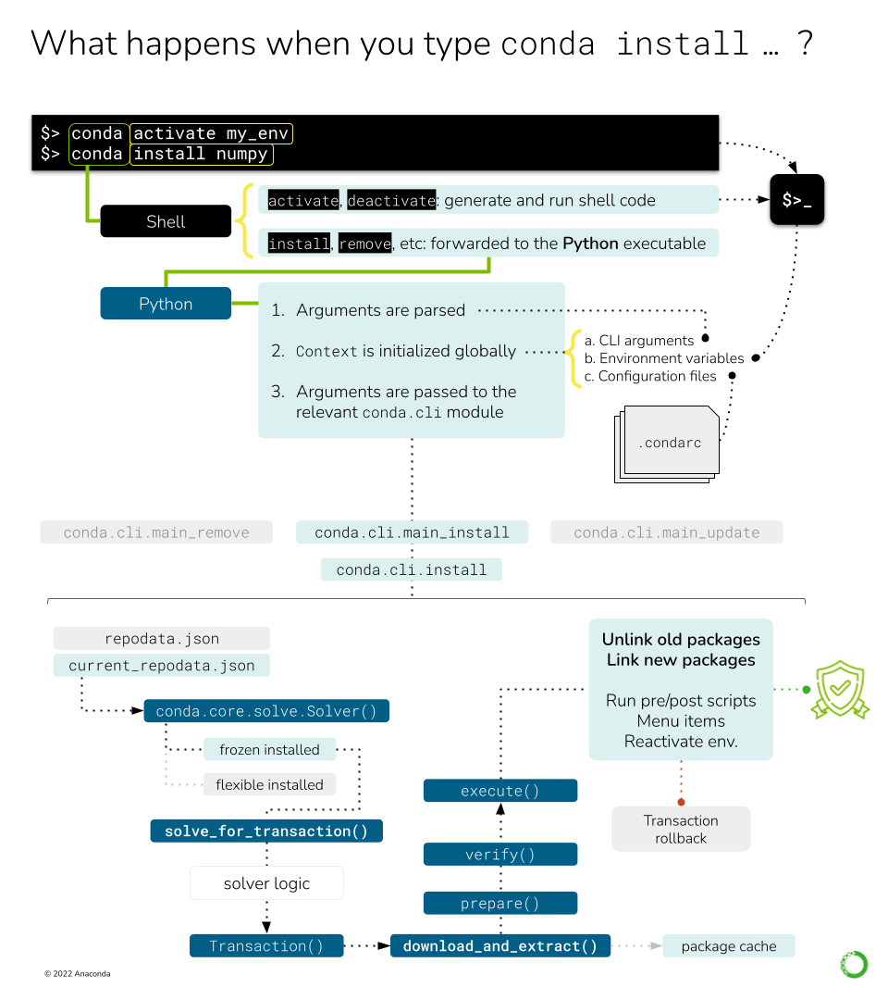

conda install#
In this document we will explore what happens in Conda from the moment a user types their installation command until the process is finished successfully. For the sake of completeness, we will consider the following situation:
The user is running commands on a Linux x64 machine with a working installation of Miniconda.
This means we have a
baseenvironment withconda,python, and their dependencies.The
baseenvironment is already preactivated for Bash. For more details on activation, check conda init and conda activate.
Ok, so… what happens when you run conda install numpy? Roughly, these steps:
Command line interface
argparseparsersEnvironment variables
Configuration files
Context initialization
Delegation of the task
Fetching the index
Retrieving all the channels and platforms
A note on channel priorities
Solving the install request
Requested packages + prefix state = list of specs
Index reduction (sometimes)
Running the solver
Post-processing the list of packages
Generating the transaction and the corresponding actions
Download and extraction
Integrity verification
Linking and unlinking files
Post-linking and post-activation tasks

This figure shows the different processes and objects involved in handling a simple conda install
command.#
Command line interface#
First, a quick note on an implementation detail that might be not obvious.
When you type conda install numpy in your terminal, Bash takes those three words and looks for a
conda command to pass a list of arguments ['conda', 'install', 'numpy']. Before finding the
conda executable located at CONDA_HOME/condabin, it probably finds the shell function
defined here. This shell function runs the activation/deactivation
logic on the shell if requested, or delegates over to the actual Python entry-points otherwise.
This part of the logic can be found in conda.shell.
Once we are running the Python entry-point, we are in the conda.cli
realm. The function called by the entry point is conda.cli.main:main().
Here, another check is done for shell.* subcommands, which generate the shell initializers you see
in ~/.bashrc and others. If you are curious where this happens, it’s
conda.activate.
Since our command is conda install ..., we still need to arrive somewhere else. You will notice
that the rest of the logic is delegated to conda.cli.main:_main(), which will invoke the parser
generators, initialize the context and loggers, and, eventually, pass the argument list over to
the corresponding command function. These four steps are implemented in four functions/classes:
conda.cli.conda_argparse:generate_parser(): This usesargparseto generate the CLI. Each subcommand is initialized in separate functions. Note that the command line options are not generated dynamically from theContextobject, but annotated manually. If this is needed (e.g.--repodata-fnis exposed inContext.repodata_fn), thedestvariable of each CLI option should match the target attribute in the context object.conda.base.context.Context: This object stores the configuration options incondaand will be initialized taking into account, among other things, the arguments parsed in the step above. This is covered in more detail in a separate deep dive: conda config and context.conda.gateways.logging:initialize_logging(): Not too exciting and easy to follow. This part of the code base is more or less self-explanatory.conda.cli.conda_argparse:do_call(): The argument parsing will populate afuncvalue that contains the import path to the function responsible for that subcommand. For example,conda installis taken care of byconda.cli.main_install. By design, all the modules reported byfuncmust contain anexecute()function that implements the command logic.execute()takes the parsed arguments and the parser itself as arguments. For example, in the case ofconda install,execute()only redirects to a certain mode inconda.cli.install:install().
Let’s go take a look at that module now. conda.cli.install:install()
implements the logic behind conda create, conda install, conda update and conda remove.
In essence, they all deal with the same task: changing which packages are present in an environment.
If you go and read that function, you will see there are several lines of code handling diverse
situations (new environments, clones, etc.) before we arrive to the next section. We will not discuss
them here, but feel free to explore that section.
It’s mostly ensuring that the destination prefix exists, whether we are creating a new environment
and massaging some command line flags that would allow us to skip the solver (e.g. --clone).
More information on environments
Check the concepts for 环境.
Fetching the index#
At this point, we are ready to start doing some work! All of the previous code was telling us what to
do, and now we know. We want conda to install numpy on our base environment. The first thing
we need to know is where we can find packages with the name numpy. The answer is… the channels!
Users download packages from conda channels. These are normally hosted at anaconda.org. A
channel is essentially a directory structure with these elements:
<channel>
├── channeldata.json
├── index.html
├── <platform> (e.g. linux-64)
│ ├── current_repodata.json
│ ├── current_repodata.json.bz2
│ ├── index.html
│ ├── repodata.json
│ ├── repodata.json.bz2
│ ├── repodata_from_packages.json
│ └── repodata_from_packages.json.bz2
└── noarch
├── current_repodata.json
├── current_repodata.json.bz2
├── index.html
├── repodata.json
├── repodata.json.bz2
├── repodata_from_packages.json
└── repodata_from_packages.json.bz2
More info on Channels
You can find some more user-oriented notes on Channels at 什么是“频道”？ and 代码库结构和索引. If you are interested in more technical details, check the corresponding documentation pages at conda-build.
The important bits are:
A channel contains one or more platform-specific directories (
linux-64,osx-64, etc.), plus a platform-agnostic directory callednoarch. Incondajargon, these are also referred to as channel subdirs. Officially, thenoarchsubdirectory is enough to make it acondachannel; e.g. no platform subdirectory is necessary.Each subdir contains at least a
repodata.jsonfile: a gigantic dictionary with all the metadata for each package available on that platform.In most cases, the same subdirs also contain the
*.tar.bz2files for each of the published packages. This is whatcondadownloads and extracts once solving is complete. The anatomy of these files is well defined, both in content and naming structure. See 什么是软件包？, 软件包元数据 and/or Package naming conventions for more details.
Additionally, the channel’s main directory might contain a channeldata.json file, with channel-wide
metadata (this is not specific per platform). Not all channels include this, and in general
it is not currently something that is commonly utilized.
Since conda’s philosophy is to keep all packages ever published around for reproducibility,
repodata.json is always growing, which presents a problem both for the download itself and the
solver engine. To reduce download times and bandwidth usage, repodata.json is also served as a
BZIP2 compressed file, repodata.json.bz2. This is what most conda clients end up downloading.
Note on ‘current_repodata.json’
More repodatas variations can be found in some channels, but they are always reduced versions
of the main one for the sake of performance. For example, current_repodata.json only contains
the most recent version of each package, plus their dependencies. The rationale behind this
optimization trick can be found here.
So, in essence, fetching the channel information means it can be expressed in pseudo-code like this:
platform = {}
noarch = {}
for channel in reversed(context.channels):
platform_repodata = fetch_extract_and_read(
channel.full_url / context.subdir / "repodata.json.bz2"
)
platform.update(platform_repodata)
noarch_repodata = fetch_extract_and_read(
channel.full_url / "noarch" / "repodata.json.bz2"
)
noarch.update(noarch_repodata)
Note that these dictionaries are keyed by filename, so higher priority channels will overwrite
entries with the exact same filename (e.g. numpy-1.19-py36h87ha43_0.tar.bz2). If they don’t have
the same filename (e.g., same version and build number but different hash), this ambiguity will
be resolved later in the solver, taking into account the channel priority mode.
In this example, context.channels has been populated through different, cascading mechanisms:
The default settings as found in
~/.condarcor equivalent.The
CONDA_CHANNELSenvironment variable (rare usage).The command-line flags, such as
-c <channel>,--use-localor--override-channels.The channels present in a command-line spec. Remember that users can say
channel::numpyinstead of simplynumpyto require that numpy comes from that specific channel. That means that the repodata for such channel needs to be fetched, too!
The items in context.channels are supposed to be conda.models.channels.Channel objects, but
the Solver API also allows strings that refer to their name, alias or full URL. In that case,
you can use Channel objects to parse and retrieve the full URL for each subdir using the
Channel.urls() method. Several helper functions can be found in conda.core.index, if
needed.
Sadly, fetch_extract_and_read() does not exist as such, but as a combination of objects. The
main driving function is actually get_index(), which passes the
channel URLs to fetch_index, a wrapper that delegates directly to
conda.core.subdir_data.SubdirData objects. This object implements caching, authentication,
proxies and other things that complicate the simple idea of “just download the file, please”.
Most of the logic is in SubdirData._load(), which ends up calling
conda.core.subdir_data.fetch_repodata_remote_request() to process the request. Finally,
SubdirData._process_raw_repodata_str() does the parsing and loading.
Internally, the SubdirData stores all the package metadata as a list of PackageRecord
objects. Its main usage is via .query() (one result at a time) or .query_all() (all
possible matches). These .query* methods accept spec strings (e.g. numpy =1.14),
MatchSpec and PackageRecord instances. Alternatively, if you want all records with no
queries, use SubdirData.iter_records().
Tricks to reduce the size of the index
conda supports the notion of trying with different versions of the index in an effort to minimize
the solution space. A smaller index means a faster search, after all! The default logic starts with
current_repodata.json files in the channel, which contain only the latest versions of each package
plus their dependencies. If that fails, then the full repodata.json is used. This happens before
the Solver is even invoked.
The second trick is done within the classic solver logic (pycosat): an informed index reduction. In essence, the
index (whether it’s current_repodata.json or full repodata.json) is pruned by the solver,
trying to keep only the parts that it anticipates will be needed. More details can be found on
the get_reduced_index function. Interestingly, this
optimization step also takes longer the bigger the index gets.
Channel priorities#
context.channels returns an IndexedSet of Channel objects; essentially a list of unique
items. The different channels in this list can have overlapping or even conflicting information
for the same package name. For example, defaults and conda-forge will for sure contain
packages that fullfil the conda install numpy request. Which one is chosen by conda in this
case? It depends on the context.channel_priority setting: From the help message:
Accepts values of ‘strict’, ‘flexible’, and ‘disabled’. The default value is ‘flexible’. With strict channel priority, packages in lower priority channels are not considered if a package with the same name appears in a higher priority channel. With flexible channel priority, the solver may reach into lower priority channels to fulfill dependencies, rather than raising an unsatisfiable error. With channel priority disabled, package version takes precedence, and the configured priority of channels is used only to break ties.
In practice, channel_priority=strict is often the recommended setting for most users. It’s faster
to solve and causes fewer problems down the line. Check more details
here.
Solving the install request#
At this point, we can start asking the solver things. After all, we have loaded the channels into our index, building the catalog of available packages and versions we can install. We also have the command line instructions and configurations needed to customize the solver request. So, let’s just do it: “Solver, please install numpy on this prefix using these channels as package sources”.
The details are complicated, but in essence, the Solver will:
Express the requested packages, command line options and prefix state as
MatchSpecobjectsQuery the index for the best possible match that satisfy those constraints
Return a list of
PackageRecordobjects
The full details are covered in Solvers if you are curious. Just keep in mind that point (1) is conda-specific, while (2) can be tackled, in principle, by any SAT solver.
Generating the transaction and the corresponding actions#
The Solver API defines three public methods:
.solve_final_state(): this is the core function, described in the section above. Given some input state, it returns anIndexedSetofPackageRecordobjects that reflect what the final state of the environment should look like. This is the largest method, and its details are fully covered here..solve_for_diff(): this method takes the final state and diffs it with the current state of the environment, discovering which old records need to be removed, and which ones need to be added..solve_for_transaction(): this method takes the diff and creates aTransactionobject for this operation. This is what the main CLI logic expects back from the solver.
So what is a Transaction object and why is it needed? Transactional actions
were introduced in conda 4.3. They seem to be the last iteration of a set of changes designed to
check whether conda would be able to download and link the needed packages (e.g. check that
there is enough space on disk, whether the user has enough permissions for the target paths, etc.).
For more info, refer to PRs #3571, #3301, and #3034.
The transaction is essentially a set of action objects. Each action is allowed to run some
checks to determine whether it can be executed successfully. If that’s not the case, the failed
checks will signal the parent transaction that the whole operation needs to be aborted and
rolled back to leave things in the state they were before running that conda command. It is also
responsible for some of the messages you will see in the CLI output, like the reports of what will
be installed, updated or removed.
Transactions and parallelism
Since the transaction object knows about all the actions that need to happen, it also enables
parallelism for verifying, downloading and (un)linking tasks. The level of parallelism
can be changed through the following context settings:
default_threadsverify_threadsexecute_threadsrepodata_threadsfetch_threads
There’s only one class of transaction in conda:
LinkUnlinkTransaction. It only accepts one input parameter:
a list of PrefixSetup objects, which are just namedtuple objects with the following fields.
These are populated by Solver.solve_for_transaction after running Solver.solve_for_diff:
target_prefix: the environment path the command is running on.unlink_precs:PackageRecordobjects that need to be unlinked (removed).link_precs:PackageRecordobjects that need to be linked (added).remove_specs:MatchSpecobjects that need to be marked as removed in the history (the user asked for these packages to be uninstalled).update_specs:MatchSpecobjects that need to be marked as added in the history (the user asked for these packages to be installed or updated).neutered_specs:MatchSpecobjects that were already in history but had to be relaxed in order to avoid solving conflicts.
Whatever happens after instantiation depends on the content of these PrefixSetup objects.
Sometimes, the transaction results in no actions (see the nothing_to_do
property) because the request asked by the user is already fulfilled by the current state
of the environment.
However, most of the time the transaction will involve a number of actions. This is done via two public methods:
download_and_extract(): essentially a forwarder to instantiate and callProgressiveFetchExtract, responsible for deciding whichPackageRecordsneed to be downloaded and extracted to the packages cache.execute(): the core logic is layed out here. It involves preparing, verifying and performing the rest of the actions. Among others:Unlinking packages (removing a package from the environment)
Linking (adding a package to the environment)
Compiling bytecode (generating the
pyccounterpart for eachpymodule)Adding entry points (generate command line executables for the configured functions)
Adding the JSON records (for each package, a JSON file is added to
conda-meta/)Make menu items (create shortcuts for packages featuring a JSON file under
Menu/)Remove menu items (remove the shortcuts created by that package)
It’s important to notice that download and extraction happen separately from all the other actions.
This separation is important and core to the idea of what a conda environment is. Essentially,
when you create a new conda environment, you are not necessarily copying files over to the target
prefix location. Instead, conda maintains a cache of every package ever downloaded to disk (both
the tarball and the extracted contents). To save space and speed up environment creation and
deletion, files are not copied over, but instead they are linked (usually via a hardlink). That’s
why these two tasks are separated in the transaction logic: you don’t need to download and extract
packages that are already in the cache; you only need to link them!
Transactions also drive reports
The type and number of actions can also be calculated by _make_legacy_action_groups(), which
returns a list of action groups (one per PrefixSetup). Each action group is a just a dictionary
following this specification:
{
"FETCH": Iterable[PackageRecord], # estimated by `ProgressiveFetchExtract`
"PREFIX": str,
"UNLINK": Iterable[PackageRecord],
"LINK: Iterable[PackageRecord],
}
These simpler action groups are only used for reporting, either via a processed text report
(via print_transaction_summary) or just the raw JSON (via stdout_json_success). As you can see,
they do not know anything about other types of tasks.
Download and extraction#
conda maintains a cache of downloaded tarballs and their extracted contents to save disk space
and improve the performance of environment modifications. This requires some code to check whether
a given PackageRecord is already present in the cache, and, if it’s not, how to download the
tarball and extract its contents in a performant way. This is all handled by the
ProgressiveFetchExtract class, which can instantiate up to two Action objects for each
passed PackageRecord:
CacheUrlAction: downloads (if remote) or copies (if local) a tarball to the cache location.ExtractPackageAction: extracts the contents of the tarball.
These two actions only take place if the package is not in cache yet and if it has already been extracted, respectively. They can also revert the changes if the transaction is aborted (either due to an error or because the user pressed Ctrl+C).
Populating the prefix#
When all the necessary packages have been downloaded and extracted to the cache, it is time to start populating the prefix with the needed files. This means we need to:
For each package that needs to be unlinked, run the pre-unlink logic (
deactivateandpre-unlinkscripts, as well as shortcut removal, if needed) and then unlink the package files.For each package that needs to be linked, create the links and run the post-link logic (
post-linkandactivatescripts, as well as creating the shortcuts, if needed).
Note that when you are updating a package version, you are actually removing the installed version entirely and then adding the new one. In other words, an update is just unlink+link.
How is this implemented? For each PrefixSetup object passed to UnlinkLinkTransaction, a
number of ActionGroup namedtuples (one per task category) will be instantiated and grouped
together in a PrefixActionGroup namedtuple. These are then passed to .verify(). This method
will take each action, run its checks and, if all of them passed, will allow us to perform the
actual execution in .execute(). If one of them fails, the transaction can be aborted and
rolled back.
For all this to work, each action object follows the
PathAction API contract:
class PathAction:
_verified = False
def verify(self):
"Run checks to assess if the action can proceed"
def execute(self):
"Perform the action"
def reverse(self):
"Undo execute"
def cleanup(self):
"Remove artifacts from verification, execution or reversal"
@property
def verified(self):
"True if verification was run and successful"
Additional PathAction subclasses will add more methods and properties, but this is what the
transaction execution logic expects. To support all the different actions involved in populating
the prefix, the PathAction class tree holds quite the graph:
PathAction
PrefixPathAction
CreateInPrefixPathAction
LinkPathAction
PrefixReplaceLinkAction
MakeMenuAction
CreatePythonEntryPointAction
CreatePrefixRecordAction
UpdateHistoryAction
RemoveFromPrefixPathAction
UnlinkPathAction
RemoveLinkedPackageRecordAction
RemoveMenuAction
RegisterEnvironmentLocationAction
UnregisterEnvironmentLocationAction
CacheUrlAction
ExtractPackageAction
MultiPathAction
CompileMultiPycAction
AggregateCompileMultiPycAction
You are welcome to read on the docstring for each of those classes to understand which each one
is doing; all of them are listed under conda.core.path_actions. In the following sections, we will
only comment on the most important ones.
Linking the files in the environment#
When conda links a file from the cache location to the prefix location, it can actually mean three different actions:
Creating a soft link
Creating a hard link
Copying the file
The difference between soft links and hard links is subtle, but important. You can find more info on the differences elsewhere (e.g. here), but for our purposes it means that:
Hard links are cheaper to resolve, behave like a real file, but can only link files in the same mount point.
Soft links can link files across mount points, but they don’t behave exactly like files (more like forwarders), so it’s possible that they break assumptions made in certain pieces of code.
Most of the time, conda will try to hard link files and, if that fails, it will copy them over.
Copying a file is an expensive disk operation, both in terms of time and space, so it should be
the last option. However, sometimes it’s the only way. Especially, when the file needs to be
modified to be used in the target prefix.
Ummm… what? Why would conda modify a file to install it? This has to do with relocatability.
When a conda package is created, conda-build creates up to three temporary environments:
Build environment: where compilers and other build tools are installed, separate from the host environment to support cross-compilation.
Host environment: where build-time dependencies are installed, together with the package you are building.
Test environment: where run-time dependencies are installed, together with the package you just built. It simulates what will happen when a user installs the package so you can run arbitrary checks on your package.
When you are building a package, references to the build-time paths can leak into the content of
some files, both text and binary. This is not a problem for users who build their own packages
from source, since they can choose this path and leave the files there. However, this is almost
never true for conda packages. They are created in one machine and installed in another. To avoid
“path not found” issues and other problems, conda-build marks those packages that hold references
to the build-time paths by replacing them with placeholders. At install-time, conda will replace
those placeholders with the target prefix and everything works!
But there’s a problem: we can’t modify the files on the cache location because they might be used across environments (with obviously different paths). In these cases, files are not linked, but copied; the path replacement only happens on the target copy, of course!
How does conda know how to link a given package or, more precisely, its extracted files? All
of this is determined in the preparation routines contained in
UnlinkLinkTransaction._prepare() (more specifically, through
determine_link_type()), as well as
LinkPathAction.create_file_link_actions().
Note that the (un)linking actions also include the execution of pre-(un)link and post-(un)link scripts, if listed.
Action groups and actions, in detail#
Once the old packages have been removed and the new ones have been linked through the appropriate means, we are done, right? Not yet! There’s one step left: the post-linking logic.
It turns out that there’s a number of smaller tasks that need to happen to make conda as
convenient as it is. You can find all of them listed a few paragraphs above, but we’ll cover
them here, too. The execution order is determined in
UnlinLinkTransaction._execute.
All the possible groups are listed under PrefixActionGroup.
Their order is roughly how they happen in practice:
remove_menu_action_groups, composed ofRemoveMenuActionactions.unlink_action_groups, includesUnlinkPathAction,RemoveLinkedPackageRecordAction, as well as the logic to run the pre- and post-unlink scripts.unregister_action_groups, basically a singleUnregisterEnvironmentLocationActionaction.link_action_groups, includesLinkPathAction,PrefixReplaceLinkAction, as well as the logic to run pre- and post-link scripts.entry_point_action_groups, a collection ofCreatePythonEntryPointActionactions.register_action_groups, a singleRegisterEnvironmentLocationActionaction.compile_action_groups, severalCompileMultiPycActionthat end up aggregated as aAggregateCompileMultiPycActionfor performance.make_menu_action_groups, composed ofMakeMenuActionactions.prefix_record_groups, records installed packages in the environment viaCreatePrefixRecordActionactions.
Let’s discuss these actions groups for the command we are describing in this guide: conda install numpy. The solution given by the solver says we need to:
unlink Python 3.9.6
link Python 3.9.9
link numpy 1.19
This is what would happen:
No menu items are removed because Python 3.9.6 didn’t create any.
Pre-unlink scripts for Python 3.9.6 would run, but in this case there are none.
Python 3.9.6 files are removed from the environment. This can be parallelized.
Post-unlink scripts are run, if any.
Pre-link scripts are run for Python 3.9.9 and numpy 1.19, if any.
Files in the Python 3.9.9 and numpy 1.19 packages are linked and/or copied to the prefix. This can be parallelized.
Entry points are created for the new packages, if any.
Post-link scripts are run.
pycfiles are generated for the new packages.The new packages are registered under
conda-meta/.The menu shortcuts are created for the new packages, if any.
Any of these steps can fail with a given exception. If that’s the case, the first of those
exceptions is printed to STDOUT. Additionally, if rollback_enabled is properly configured in
the context, the transaction will be rolled back by calling the .reverse() method in each
action, from last to first.
If no exceptions are reported, then the actions can run their cleanup routines.
And that’s it! If this command had resulted in a new environment being created, you would get a message telling you how to activate the newly created environment.
Conclusion#
This is what happens when you type conda install. It might be a bit more involved than you
initially thought, but it all boils down to only some steps. TL;DR:
Parse arguments and initialize the context
Download and build the index
Tell the solver what we want
Convert the solution into a transaction
Verify and run each action contained in the transaction